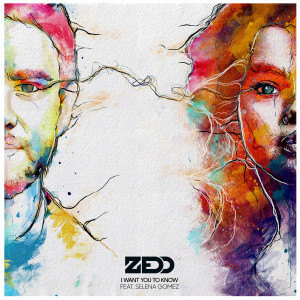

《Love Me Harder》 Ariana Grande
《Sky》 Steerner
《See You Again》 Wiz Khalifa
《Don't》 Ed Sheeran
《Uptown Funk》 Mark Ronson

《Want You to Know》Zedd
《Chains》Nick Jonas
《The Heart Wants What It Wants》Selena Gomez
《Sing》Ed Sheeran
《Truffle Butter》Nicki Minaj
《King》Years & Years

《Elastic Heart》Sia
Love Me Harder
歌手：Ariana Grande
Tell me something I need to know
Then take my breath and never let it go
If you just let me invade your space
I'll take the pleasure, take it with the pain
And if in the moment I bite my lip
Baby in that moment you know this is
Something bigger than us and beyond bliss
Give me a reason to believe it
Cause if you want to keep me
You gotta, gotta, gotta, gotta,
got to love me harder
And if you really need me
You gotta, gotta, gotta, gotta,
got to love me harder
(Baby love me harder)
Ooo love me, love me, love me
Ooo harder, harder, harder
I know your motives
And you know mine
The ones that love me
I tend to leave behind
If you know about me
And choose to stay
Then take this pleasure
and take it with the pain
And if in the moment you bite your lip
When I get you moaning you'll know it's real
Can you feel the pressure between your hips
I'll make you feel like the first time
Cause if you want to keep me
You gotta, gotta, gotta, gotta,
got to love me harder
(Imma love ya harder)
And if you really need me
You gotta, gotta, gotta, gotta,
got to love me harder
(Love me harder)
Ooo love me, love me, love me
Ooo harder, harder, harder
Ooo love me, love me, love me
Ooo harder, harder, harder
(Love me harder)
So what do I do if I can't figure it out
You got to try, try, try again
So what do I do if I can't figure it out
I'm gonna leave, leave, leave again
Cause it you want to keep me
You gotta, gotta, gotta, gotta,
got to love me harder
(I will love, love, love)
And if you really need me
You gotta, gotta, gotta, gotta,
got to love me harder
(Love, love baby)
Cause if you want to keep me
You gotta, gotta, gotta, gotta,
got to love me harder
(Love me harder)
And if you really need me
You gotta, gotta, gotta, gotta,
got to love me harder(I'm gonna do it,do it)
(Imma love ya harder)
Ooo love me, love me,love me (Love you)
Ooo harder,harder,harder(Love me,love me baby)
Ooo love me, love me, love me
(Just a little bit harder, harder baby)
Ooo harder, harder, harder